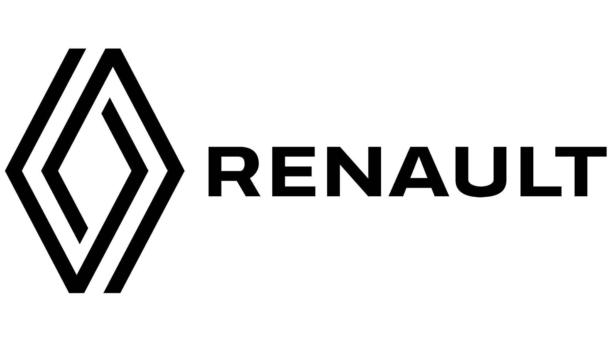
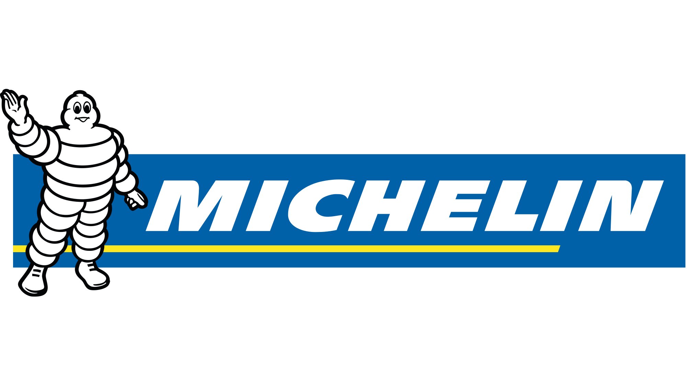

SUV Araç motorlarında en büyük destekçimiz Renault Motors

Dünya genelinde SUV araç lastiklerinde bir numara
Ses sistemlerinde üstün performansı ile yol boyunca keyifli müzik
SUV Araç alımlarında hemen teslim avantajıyla peşin fiyatına 24 ay taksit fırsatı seni bekliyor!
Yeni Dacia araç satın alımlarında 2 aylık ücretsiz YouTube ve YouTube Music Premium fırsatı!
Aynı zamanda yeni araç satın alımlarında 2 aylık ücretsiz Turkcell TV+ üyeliği seni bekliyor!
Dacia, Romanya merkezli bir otomobil üreticisidir ve bugün Renault Grubu’nun bir parçası olarak faaliyet göstermektedir. 1966 yılında kurulan şirket, adını Romanya topraklarının eski adı olan “Daçya”dan almıştır. İlk modeli olan Dacia 1100, Renault 8’in lisanslı versiyonu olarak 1968’de piyasaya sürülmüştür. Ardından 1969’da Renault 12’nin uyarlaması olan Dacia 1300 modeli üretime başlamış ve uzun yıllar boyunca Romanya’da en çok tercih edilen araçlardan biri olmuştur. 1999 yılında Renault tarafından satın alınan Dacia, bu sayede küresel pazarlara açılma fırsatı bulmuştur. Renault’un desteğiyle marka, ekonomik ve dayanıklı otomobiller üretme vizyonunu sürdürmüş, özellikle Logan, Sandero ve Duster gibi modellerle uluslararası alanda büyük başarı elde etmiştir. Bu araçlar, düşük maliyetli üretim ve uygun fiyat politikası sayesinde Avrupa’da geniş bir müşteri kitlesine ulaşmıştır. Türkiye’de Duster, Sandero, Stepway ve Jogger gibi modellerle satışa sunulmaktadır. Markanın Türkiye’deki stratejisi, fiyat/performans dengesi üzerine kuruludur. Uygun fiyatlı ve pratik çözümler sunan Dacia, özellikle geniş aileler ve ekonomik araç arayan kullanıcılar için cazip bir seçenek haline gelmiştir. Yeni nesil modellerinde hibrit motor seçenekleri ve modern teknolojik donanımlar da sunulmaktadır. Bugün Dacia, ekonomik otomobil segmentinde Avrupa’nın lider markalarından biri olarak görülmektedir. Renault’un küresel ağı sayesinde hem Avrupa’da hem de Türkiye’de güçlü bir satış ve servis altyapısına sahiptir. Markanın temel hedefi, erişilebilir fiyatlarla güvenilir otomobiller sunmak ve çevre dostu motor seçenekleriyle sürdürülebilirliğe katkıda bulunmaktır. Dacia, bu vizyonuyla gelecekte de geniş kitlelere hitap etmeyi amaçlamaktadır.